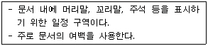
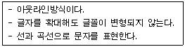
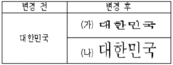
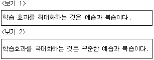
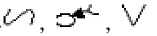
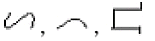
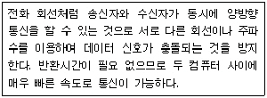
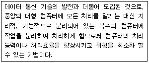
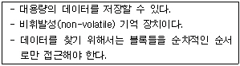

워드프로세서-(구-1급) (2009-04-12 기출문제)
1과목: 워드프로세싱 일반
1. 다음은 워드프로세서의 어느 용어에 대한 설명인가?

- 각주
- 캡션
- 옵션
- 보일러 플레이트
(정답률: 72%)

2. 문서의 일부분이 또 다른 문서와 연결되어 있어서 연결된 문서를 필요 시 임의로 참조할 수 있도록 구성된 문서의 형식은?
- 하이퍼텍스트
- 개체연결
- 메일머지
- 스풀
(정답률: 74%)
3. 다음 중 워드프로세서의 매크로 기능을 적용하기에 적합하지 않은 경우는?
- 여러 개의 문단에서 동일한 정렬을 사용하고자 할 때
- 동일한 도형을 여러 곳에 사용하고자 할 때
- 문서의 여러 곳에 동일한 서식을 이용하고 싶을 때
- 문서에 그림 개체를 삽입하고자 할 때
(정답률: 68%)
4. 다음 중 캐시 메모리(Cache Memory)에 관한 설명으로 옳은 것은?
- 중앙처리장치와 보조기억장치 사이에서 실행속도를 높이기 위해 사용된다.
- 저장된 내용을 읽을 수는 있으나, 변경할 수는 없다.
- 캐시 메모리는 주로 DRAM으로 만들어진다.
- 다른 메모리에 비해 접근속도는 빠르나 값이 비싼 단점이 있다.
(정답률: 45%)
5. 다음 중 KS X 1001 완성형 한글 코드에 대한 설명으로 옳지 않은 것은?
- 영문과 숫자는 1Byte, 한글 · 한자 등은 2Byte로 나타낸다.
- 초성, 중성, 종성에 부여된 코드 값을 조합하여 완성 시킨다.
- 정보교환용으로 사용되며, 정보교환 시 충돌이 없다.
- 모든 문자에 코드를 부여해야 함으로 많은 메모리가 사용된다.
(정답률: 49%)
6. 다음 중 DVD의 특징으로 옳지 않은 것은?
- 멀티미디어 데이터를 저장하는데 적합하다.
- CD-ROM 보다 대용량의 데이터를 저장할 수 있다.
- 자기 디스크의 일종으로 하드디스크 보다 읽고 쓰는 속도가 빠르다.
- 저장되는 면은 트랙과 섹터로 구분되어 있으며, 이곳에 데이터를 저장한다.
(정답률: 58%)
7. 다음 중 전자출판에서 이미지 변형 작업, 입출력 파일 포맷, 채도, 조명도, 명암 등을 조절하는 것을 무엇이라 하는가?
- 모핑
- 커닝
- 초크
- 하프톤
(정답률: 73%)
8. 다음 중 전자출판에서 사용되는 글꼴의 크기 단위로 가장 많이 사용되는 것은?
- 퍼센트(%)
- 밀리미터(mm)
- 도트(Dot)
- 포인트(point)
(정답률: 80%)
9. 다음 여러 가지 용어에 대한 설명 중에서 옳지 않은 것은?
- CWP : 문서작성 시 사용할 수 있도록 만들어 놓은 그래픽 데이터 모음
- DTP : 전자 출판 또는 탁상출판
- E-mail : 네트워크를 이용한 전자우편
- EDI : 네트워크를 통한 업무의 교환 시스템으로 문서의 표준화를 전제로 운영된다.
(정답률: 62%)
10. 다음 중 공문서 항목 구분 시 셋째 항목의 항목 구분으로 사용할 수 있는 기호는?
- 거, 너.......
- 1), 2).......
- 가), 나).......
- 가, 나.......
(정답률: 73%)
11. 다음 중 워드프로세서의 기능을 수행하는 장치에 대한 설명으로 옳지 않은 것은?
- 입력장치에는 스캐너, 터치패드 등이 있다.
- 표시장치에는 LCD, CRT 등이 있다.
- 전송장치에는 프린터 등이 있다.
- 저장장치에는 하드디스크, 플로피디스크 등이 있다.
(정답률: 75%)
12. 다음 중 전자출판(Electronic Publishing) 용어에 대한 설명으로 옳지 않은 것은?
- 디더링(Dithering) : 제한된 색상을 조합 또는 비율을 변화하여 새로운 색을 만드는 작업
- 리딩(Leading) : 한 행의 기준선에서 다음 행의 기준선까지의 간격
- 스프레드(Spread) : 사진이나 그래픽 이미지를 문서의 바탕에 투명하게 인쇄하는 작업
- 리터칭(Retouching) : 기존의 이미지를 다른 형태로 새롭게 변형시키는 작업
(정답률: 60%)
13. 다음 중 개체 묶기(그룹화)를 하기 위해 연속적인 선택을 하려면 마우스와 함께 어떤 키를 사용해야 하는가?
- [Ctrl] 키
- [Shift] 키
- [Alt] 키
- [Tab] 키
(정답률: 65%)
14. 다음 중 보기의 설명에 해당되지 않는 글꼴은?

- 비트맵 글꼴
- 트루타입 글꼴
- 벡터 글꼴
- 오픈타입 글꼴
(정답률: 45%)
15. 다음 보기의 변경 전 글자 ‘대한민국’에 어떤 기능이 적용되어 변경 후 (가)와 (나)가 각각 만들어진 것인가?

- (가) 글자크기 변경, (나) 장평 변경
- (가) 음영 변경, (나) 자간 변경
- (가) 글꼴 변경, (나) 장평 변경
- (가) 장평변경, (나) 글자크기 변경
(정답률: 79%)
16. 다음 중 스타일에 대한 설명으로 옳지 않은 것은?
- 문서마다 스타일 서식을 새로 만들어야만 한다.
- 일관성 있는 문단 모양을 유지하는데 사용한다.
- 스타일 유형을 추가, 삭제하거나 수정할 수 있다.
- 블록 설정을 해서 한꺼번에 지정할 수 있다.
(정답률: 71%)
17. “관인에는 행정기관의 명의로 발송 또는 교부하는 문서에 사용하는 ( )과 행정기관의 장 또는 보조기관의 명의로 발송 또는 교부하는 문서에 사용하는 ( )으로 구분한다” 에서 ( )안에 들어갈 적당한 용어를 순서대로 나열한 것은?
- 직인, 청인
- 청인, 직인
- 직인, 인영
- 인영, 직인
(정답률: 60%)
18. 다음 중 교정부호 사용 시 유의할 점에 대하여 설명한 것으로 옳지 않은 것은?
- 교정부호는 정해진 부호를 사용해서 교정한다.
- 교정부호를 표시하는 색은 인쇄된 글자의 색상과 같아야 한다.
- 한 번 교정된 부분도 다시 교정할 수 있다.
- 교정부호가 너무 복잡하거나 난해하지 않도록 한다.
(정답률: 79%)
19. 다음 중 그래픽 파일 형식이 아닌 것은?
- a.tif
- b.jpg
- c.rtf
- d.eps
(정답률: 44%)
20. <보기 1>의 문장이 <보기 2>의 문장으로 수정되기 위해 필요한 교정부호들로만 올바르게 짝지어진 것은?



(정답률: 76%)
2과목: PC 운영 체제
21. 한글 Windows XP에서 프린터의 스풀(Spool)기능에 관한 설명으로 옳지 않은 것은?
- Simultaneous Peripheral Operation On-Line의 약자로서 하드 디스크를 이용한다.
- 저속의 출력 장치와 고속의 중앙 처리 장치의 처리속도 차이의 문제를 해결하여 효율성을 증가시킬 수 있다.
- 인쇄가 끝날 때까지 컴퓨터가 다른 처리를 못하도록 독립성을 유지하여 자료의 정상 출력을 유도하는 기능이다.
- 설치된 프린터 아이콘의 등록정보 창에서 세부 사항을 설정할 수 있다.
(정답률: 63%)
22. 한글 Windows XP의 [프로그램 추가/제거] 창에서 기본 프로그램 설정을 위한 구성 선택 항목이 아닌 것은?
- Microsoft Windows
- 타사 프로그램
- 시스템 프로그램
- 사용자 지정
(정답률: 29%)
23. 한글 Windows XP에서 제공하는 다양한 기능에 대한 설명으로 옳지 않은 것은?
- 복수 모니터 기능의 지원으로 공유된 각 사용자의 컴퓨터에 연결된 모니터에 동일한 내용이 표시되도록 구성할 수 있다.
- 사용자 계정을 이용하면 각 사용자마다 다른 바탕화면과 작업 환경에서 작업할 수 있다.
- USB메모리는 일반적으로 컴퓨터를 다시 시작하지 않고도 장치를 쉽게 추가 설치할 수 있다.
- OnNow 기능은 시동 시간을 개선하여 컴퓨터가 빠르게 응답할 수 있도록 하며, 전원 관리 기술을 사용하여 컴퓨터를 몇 초안에 시작하고 모든 프로그램을 원래대로 모두 복원한다.
(정답률: 33%)
24. 한글 Windows XP에서 [시스템 도구]의 [시스템 정보]에 관한 설명으로 옳지 않은 것은?
- 시스템 구성정보를 수집하여 연관된 시스템 항목을 표시할 수 있는 메뉴를 제공한다.
- 하드웨어 리소스에는 DMA, IRQ, I/O 주소 및 메모리 주소를 보여준다.
- 구성요소는 시스템 구성요소에 관련된 정보를 표시한다.
- 소프트웨어 환경은 컴퓨터에 설치된 모든 소프트웨어의 스냅샷(Snapshot)을 표시한다.
(정답률: 61%)
25. 한글 Windows XP에서 사용되는 바로가기 아이콘에 대한 설명으로 옳지 않은 것은?
- 일반 아이콘과 같이 더블 클릭하면 링크된 해당 프로그램이 실행된다.
- 삭제하더라도 링크된 해당 프로그램은 삭제되지 않는다.
- 바탕화면이나 폴더창 내에 어디든지 만들 수 있다.
- 설치된 프린터를 제외한 폴더나 디스크 드라이브, 파일 등의 바로 가기 아이콘을 만들 수 있다.
(정답률: 64%)
26. 다음 중 한글 Windows XP에서 [시스템 도구]의 [시스템 복원]에 관한 설명으로 옳지 않은 것은?
- 컴퓨터를 손상시킬 수 있는 변경 내용을 추적하고 복원할 수 있다.
- 시스템의 복원 상태나 시스템 복원에 사용 가능한 최소 디스크 공간은 백분비율로 50%이다.
- 시스템의 복원을 위한 디스크 공간을 줄이면 사용 가능한 복원 지점수가 줄어들 수도 있다.
- [시스템 등록 정보]창의 [시스템 복원]탭에서 ‘시스템 복원 사용 안 함’을 설정할 수 있다.
(정답률: 49%)
27. 다음 중 한글 Windows XP의 [제어판]에 있는 [내게 필요한 옵션]을 이용하여 수행할 수 있는 작업으로 옳지 않은 것은?
- 키보드에서 두 개의 키를 동시에 누르기 힘든 경우 <Shift>, <Ctrl>, <Alt> 또는 <Windows 로고>키를 눌려있는 상태로 고정할 수 있다.
- 바탕화면에 디스플레이 되는 문자의 글꼴을 설정할 수 있다.
- 시스템 신호음을 시각적으로 표시하려면 소리탐지를 설정할 수 있다.
- 키보드의 숫자 키패드로 마우스 포인터를 움직이도록 설정할 수 있다.
(정답률: 47%)
28. 한글 Windows XP에서 마우스를 이용하여 파일을 선택, 복사, 이동하는 방법으로 옳은 것은?
- 파일을 같은 드라이브에 있는 다른 폴더를 복사하려할 때 [Ctrl]키를 누른 상태에서 끌어다 놓는다.
- 비연속적으로 위치한 파일을 선택할 때에는 [Shift]키를 누르고 마우스로 파일을 선택한다.
- 파일을 C: 드라이브에서 A: 드라이브로 드래그 앤 드롭을 하면 해당 파일이 이동되어 진다.
- 같은 드라이브 내의 다른 폴더로 실행 파일을 끌어다 놓으면 바로가기 아이콘이 만들어진다.
(정답률: 48%)
29. 한글 Windows XP에서 인터넷 연결 공유(ICS)에 관한 설명으로 옳지 않은 것은?
- 인터넷 연결 공유(ICS)를 사용하면 하나의 연결만으로 홈 네트워크 또는 소규모 네트워크에 속한 컴퓨터를 인터넷에 연결할 수 있다.
- 홈 네트워크 또는 소규모 네트워크를 설치하는 경우에 일반 사용자의 계정으로도 [네트워크 설정 마법사]를 사용하여 인터넷 연결 공유를 설정할 수 있다.
- 인터넷 연결 공유를 설정한 다음에 네트워크의 모든 컴퓨터가 서로 통신하고 인터넷에 액세스할 수 있으면 Internet Explorer 및 Outlook Express와 같은 프로그램을 인터넷 서비스 공급자(ISP)에 직접 연결된 것처럼 사용할 수 있다.
- 인터넷 연결 공유는 ICS 호스트 컴퓨터가 네트워크 통신을 컴퓨터와 인터넷 사이로 지정하는 네트워크에 사용된다.
(정답률: 33%)
30. 한글 Windows XP의 [보조프로그램]에 있는 [사용자 정의 문자 편집기]프로그램에 관한 설명으로 옳지 않은 것은?
- 새로이 정의되는 문자의 글꼴뿐만 아니라 색상까지 편집하여 정의할 수 있다.
- 기본으로 완성형과 유니코드 문자 집합을 사용하여 새로운 문자를 만든다.
- 글꼴 라이브러리에 사용할 특수 문자나 로고와 같은 문자를 6,400개 까지 만들 수 있다.
- 기존 문자를 모델로 이용하여 새로운 사용자 정의 문자를 만들 수 있다.
(정답률: 39%)
31. 다음 중 한글 Windows XP의 [Windows 탐색기]를 이용하여 할 수 있는 작업에 관한 설명으로 옳은 것은?
- [탐색기]를 통해서 파일을 삭제하면 복원할 수 없다.
- [탐색기]를 통해서 오프라인으로 작업할 때 항상 최신의 데이터를 사용하기 위한 동기화를 할 수 없다.
- [탐색기]를 통해서는 네트워크 드라이브 연결을 할 수 없다.
- [탐색기]의 메뉴를 사용해서 다시 부팅할 수 없다.
(정답률: 39%)
32. 다음 중 한글 Windows XP에서 [시스템 등록정보]창에 관한 설명으로 옳지 않은 것은?
- [고급]탭에서 운영체제 버전과 사용자 정보를 검색할 수 있다.
- [하드웨어]탭에 있는 [장치 관리자]항목을 선택하면 시스템에 설치된 장치를 검색할 수 있다.
- [자동 업데이트]탭에서는 Windows에서 주기적으로 중요한 업데이트를 확인하고 설치할 수 있도록 설정할 수 있다.
- [원격]탭에서는 다른 컴퓨터에서 해당 컴퓨터를 사용할 수 있도록 원격 지원을 허용할 수 있다.
(정답률: 43%)
33. 한글 Windows XP의 네트워크 환경에서 폴더의 공유에 관한 설명으로 옳지 않은 것은?
- 폴더의 공유는 크래커에 의한 시스템 침입을 가능하게 할 수도 있다.
- [인터넷 프로토콜(TCP/IP) 등록정보] 창에서 프로토콜 설정으로 이용하여 폴더의 공유 여부를 설정한다.
- 내 컴퓨터의 다른 사용자와 특정한 폴더를 공유하려면 해당 폴더를 [공유 문서] 폴더에 마우스로 끌어다 놓으면 된다.
- 네트워크 사용자가 내 컴퓨터의 공유 폴더 내에 있는 파일을 변경할 수 있도록 설정할 수 있다.
(정답률: 36%)
34. 한글 Windows XP의 문서 편집기인 [메모장] 프로그램의 사용 방법으로 옳지 않은 것은?
- [메모장] 창에서 [편집] 주 메뉴의 ‘시간/날짜’를 선택하면 시스템의 시간과 날짜를 문서에 입력할 수 있다.
- [메모장] 창에서 [편집] 주 메뉴의 ‘글꼴’을 선택하면 편집 중인 문서의 일부분에 대해 글꼴을 종류 및 크기를 변경할 수 있다.
- [메모장] 창에서 [편집] 주 메뉴의 ‘찾기’를 선택하면 특정한 문자나 단어를 본문에서 찾을 수 있다.
- [메모장] 창의 가로 크기에 맞도록 텍스트를 편집 하려면 [서식] 주 메뉴에서 ‘자동 줄 바꿈’을 선택한다.
(정답률: 51%)
35. 한글 Windows XP의 [작업 표시줄 및 시작 메뉴속성] 창에 있는 각 항목에 대한 설명으로 옳은 것은?
- [작업 표시줄 잠금]은 사용자가 일정 시간동안 컴퓨터를 사용하지 않았을 때 작업 표시줄을 통해 프로그램을 선택하거나 실행하는 것을 방지하는 기능이다.
- [작업 표시줄 자동 숨기기]는 사전에 지정된 프로그램이 실행되는 동안에 작업 표시줄이 자동으로 표시하지 않는 기능이다.
- [작업 표시줄을 항상 위로 유지]는 다른 프로그램이 실행되더라도 작업 표시줄이 항상 화면에 맨 앞으로 표시하게 하는 기능이다.
- [빠른 실행 아이콘 표시]는 실행할 수 있는 프로그램의 아이콘을 화면에 최대한 빠른 시간에 표시하게 하는 기능이다.
(정답률: 45%)
36. 한글 Windows XP에서 사용자의 편의를 위해 제공하는 [Windows Update] 기능에 관한 설명으로 옳지 않은 것은?
- Windows 운영체제의 새로운 기능에 대한 업데이트를 제공받을 수 있다.
- [제어판]의 [자동 업데이트]기능을 이용하면 자동으로 업데이트를 제공받을 수 있다.
- [Windows Update] 기능을 통해서 모든 바이러스 백신 프로그램의 업데이트를 제공받을 수 있다.
- 비디오 카드, 사운드 카드 등과 같은 하드웨어(드라이버)와 관련된 업데이트도 제공받을 수 있다.
(정답률: 53%)
37. 다음 중 한글 Windows XP의 [디스플레이 등록정보]창에서 설정할 수 있는 내용으로 옳지 않은 것은?
- 미리 정의된 백그라운드 및 소리 그룹, 아이콘 및 기타 요소인 테마를 사용하여 컴퓨터를 사용자가 원하는 스타일로 꾸밀 수 있다.
- 바탕 화면의 [배경 무늬]를 변경할 수 있다.
- [화면 보호기]의 그림이나 대기 시간을 설정할 수 있다.
- 화면의 내용을 읽기 쉽도록 구성된 색상과 글꼴로 구성된 [고대비] 사용을 설정할 수 있다.
(정답률: 47%)
38. 다음 중 한글 Windows XP의 [그림판] 프로그램의 기능에 관한 설명으로 옳지 않은 것은?
- 레이어(Layer) 기능을 사용할 수 있다.
- [그림판]으로 그린 그림을 바탕화면의 배경으로 사용할 수 있다.
- 비트맵(.bmp) 파일로 저장할 수 있는 흑백 또는 컬러 그림을 그릴 때 사용할 수 있는 그림 도구이다.
- 전자 메일을 사용하여 이미지 보내기를 할 수 있다.
(정답률: 67%)
39. 한글 Windows XP의 사용자 계정이‘korea'일 경우에 다음의 각 항목이 위치한 폴더가 옳지 않은 것은?
- [내 문서] - C:\Documents and Settings\korea\My Documents
- [즐겨찾기] - C:\Documents and Settings\korea\Favorites
- [휴지통] - C:\Documents and Settings\korea\Recycled
- [보내기] - C:\Documents and Settings\korea\SendTo
(정답률: 50%)
40. 한글 Windows XP의 [Windows 방화벽] 창에서 수행하는 작업으로 옳지 않은 것은?
- 컴퓨터 바이러스 및 웜을 차단하여 컴퓨터에 전달되지 않게 한다.
- 특정 연결 요청을 차단하거나 차단 해제를 하기 위해 사용자 허가를 요청한다.
- 사용자가 원할 경우 기록(로그 보안)을 만들어 컴퓨터에 대하여 성공한 연결 시도와 실패한 연결 시도를 기록한다.
- 스팸이나 원하지 않은 전자 메일이 받은 편지함에 들어오는 것을 차단한다.
(정답률: 53%)
3과목: 컴퓨터 및 정보활용
41. 컴퓨터 시스템의 자원을 효율적으로 관리하고 운영하기 위한 프로그램인 운영체제의 발전과정으로 올바른 것은?
- 다중 처리 → 일괄 처리 → 분산 처리
- 일괄처리 → 다중처리 → 분산 처리
- 다중 처리 → 분산 처리 → 일괄 처리
- 일괄 처리 → 분산 처리 → 다중 처리
(정답률: 52%)
42. 다음 중 LAN과 외부 네트워크를 연결하는 장비로 응용 계층을 연결하여 데이터 형식이나 프로토콜을 변환함으로써 서로 다른 프로토콜을 갖는 네트워크를 연결시켜 주는 장치는 어느 것인가?
- 게이트웨이(Gateway)
- 브리지(Bridge)
- 리피터(Repeater)
- 라우터(Router)
(정답률: 56%)
43. 다음은 바이러스 유형 및 특징을 설명한 것이다. 옳지 않은 것은?
- 매크로 바이러스(Macro Virus) : MS워드나 엑셀의 문서파일을 감염시킨다.
- 은닉 바이러스(Stealth Virus) : 메모리에 상주하고 있으며 다른 파일을 변형한 사실을 숨기고 있어 운영체제로 부터 피해 사실을 숨길 수 있다.
- 클러스터 바이러스(Cluster Virus) :감염된 디스크 에서 프로그램이 실행되면 동시에 바이러스가 실행된다.
- 폭탄 바이러스(Bumb Virus) : 사용자의 메모리에 상주하고 있다가 특정한 날짜가 되었을 경우 파일을 감염 시킨다.
(정답률: 40%)
44. 다음 중 아날로그 데이터 신호의 진폭을 비트 단위로 샘플링하여 디지털 신호로 변환하는 방법을 무엇이라고 하는가?
- PAM(Pluse Amplitude Modulation)
- PCM(Pluse Code Modulation)
- PWM(Pluse Width Modulation)
- PPM(Pluse Phase Modulation)
(정답률: 54%)
45. 다음 중 RISC 마이크로프로세서에 대한 설명으로 옳지 않은 것은?
- CISC방식에 비해 다양한 명령어들을 지원한다.
- 속도가 빠른 그래픽 응용분야에 적합하다.
- 복잡한 프로그램이 요구될 수 있다.
- 향상된 속도를 제공한다.
(정답률: 43%)
46. 다음 중 컴퓨터 시스템이 단위 시간에 얼마나 많은 자료를 처리할 수 있는가를 표시하는 용어는 ?
- Access time
- Throughput
- MIPS
- FLOPS
(정답률: 45%)
47. 다음 중 바이러스에 대한 설명으로 옳지 않은 것은?
- 바이러스 감염에 대비하여 중요한 데이터는 미리 백업을 해둔다.
- 백신 프로그램이 시스템에 설치되어 있다고 해서 모든 바이러스를 검사/치료 할 수는 없다.
- 전자우편 바이러스는 컴퓨터를 감염시키기 위한 숙주 프로그램이 필요하지 않다.
- 정상적인 시스템에 부트 바이러스에 감염된 디스켓의 파일을 복사하면 감염된다.
(정답률: 24%)
48. 다음 중 많이 사용되는 해킹 수법으로 네트워크상에서 전달되는 모든 패킷을 분석하여 사용자의 계정과 암호를 알아내는 해킹 형태를 무엇이라 하는가?
- 크래킹(Cracking)
- 스니핑(sniffing)
- 스푸핑(spoofing)
- 트로이 목마(Trojan Horse)
(정답률: 50%)
49. 다음 중 캐시(cache) 기억장치에서 사용하는 사상 함수(mapping function)와 거리가 먼 것은?
- 주소 사상 (address mapping)
- 직접 사상 (direct mapping)
- 연관 사상 (associative mapping)
- 집합 연관 사상(set associative mapping)
(정답률: 37%)
50. 1⑤MB의 데이터를 24배속 CD-ROM으로 전송하는데 걸리는 시간은 약 몇 초 인가?
- 10초
- 20초
- 30초
- 40초
(정답률: 43%)
51. 다음 보기의 내용은 전송 방향에 따른 전송방식을 설명한 것이다. 이에 적합한 것은 어느 것인가?

- 단방향(Simplex) 통신 방식
- 반이중(Half Duplex) 통신방식
- 전이중(Full Duplex) 통신방식
- 이이중(Double Duplex) 통신방식
(정답률: 63%)
52. 다음 중 대역폭이 적은 통신매체에서도 전송이 가능하고 양방향 멀티미디어를 구현할 수 있는 동영상 압축 기술은?
- MPEG2
- MOV
- MPEG4
- DIV
(정답률: 54%)
53. 다음은 어느 시스템을 설명한 것인가?

- 온라인 시스템(ON-Line System)
- 일괄처리 시스템(Batch Processing System)
- 시분할 시스템(Time Sharing System)
- 분산 처리 시스템(Distributed Processing System)
(정답률: 64%)
54. 다음 중 정보 보안을 위한 방법에 해당하지 않는 것은?
- 방화벽(Firewall)
- 안티 바이러스(Anti-Virus)
- 암호인증
- 프로그램 공유
(정답률: 69%)
55. 다음 중 트루컬러(True Color) 시스템에서 하나의 픽셀(Pixel)의 색상(Color)을 결정하는 비트(Bit) 수는?
- 4
- 8
- 16
- 24
(정답률: 53%)
56. 다음은 멀티미디어 콘텐츠를 편집 또는 재생하는 프로그램들이다. 설명이 잘못된 것은?
- Front Page, Dream Weaver는 웹문서 편집기다.
- PhotoShop, CorelDraw는 그래픽 소프트웨어다.
- WinZip, Flash는 웹 애니메이션 제작 프로그램이다.
- Windows Media Player, RealPlayer는 오디오/비디오 파일 재생 프로그램이다.
(정답률: 60%)
57. 다음 중 MPEG 레이어 3 압축 기술을 이용하여 만든 오디오 파일 양식은 어느 것인가?
- MP3 파일
- MIDI파일
- AVI 파일
- WAVE 파일
(정답률: 53%)
58. 데이터 표현 방식에서 숫자의 표현은 고정 소수점과 부동 소수점 형식으로 나누어진다. 다음 중 부동 소수점형식에 대한 설명으로 옳지 않은 것은?
- 부호, 지수부, 가수부로 구성되어 있다.
- 소수점이 포함된 실수 데이터를 연산에 사용하며, 양수와 음수를 모두 표현할 수 있다.
- 고정 소수점 형식보다 연산속도가 빠르므로 연산 시간이 짧다.
- 고정 소수점 형식에 비해 매우 큰 수나 작은 수를 표현할 수 있다.
(정답률: 51%)
59. 다음 중 근거리 통신망을 전송방식에 따라 분류하였을 경우 해당되지 않는 것은?
- 듀얼 밴드 방식
- 베이스 밴드 방식
- 브로드 밴드 방식
- 캐리어 밴드 방식
(정답률: 38%)
60. 다음의 설명에 해당하는 기억 장치는 어느 것인가?

- 메인 메모리(main memory)
- 자기 테이프(magnetic tape)
- 자기 디스크(magnetic disk)
- 캐시 메모리(cache memory)
(정답률: 35%)